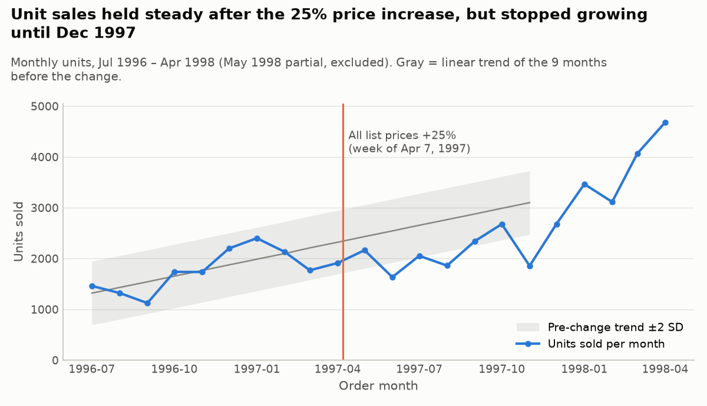
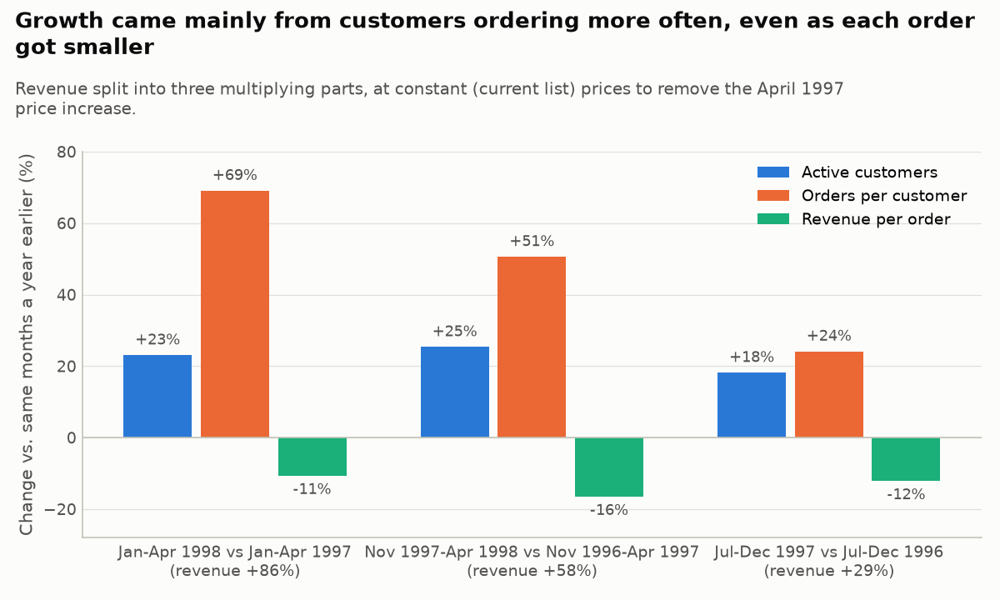
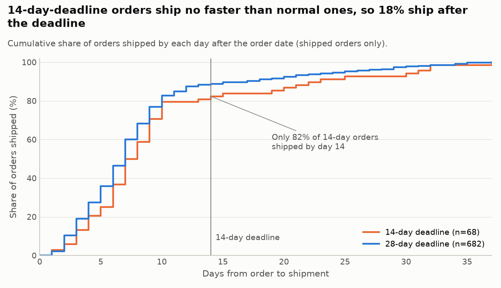
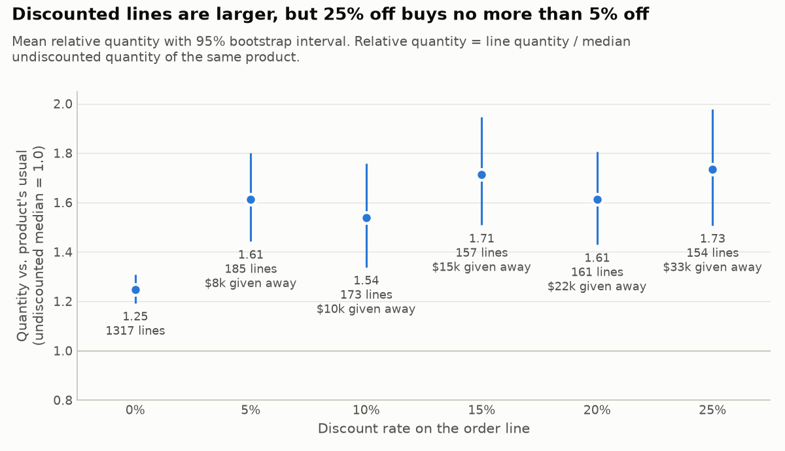
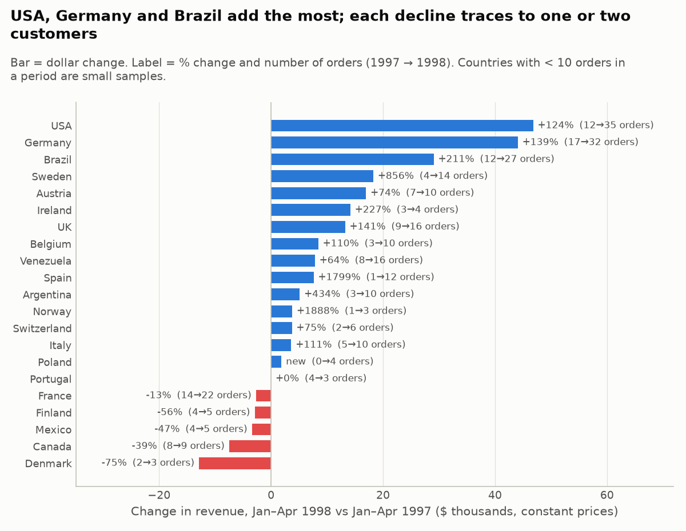
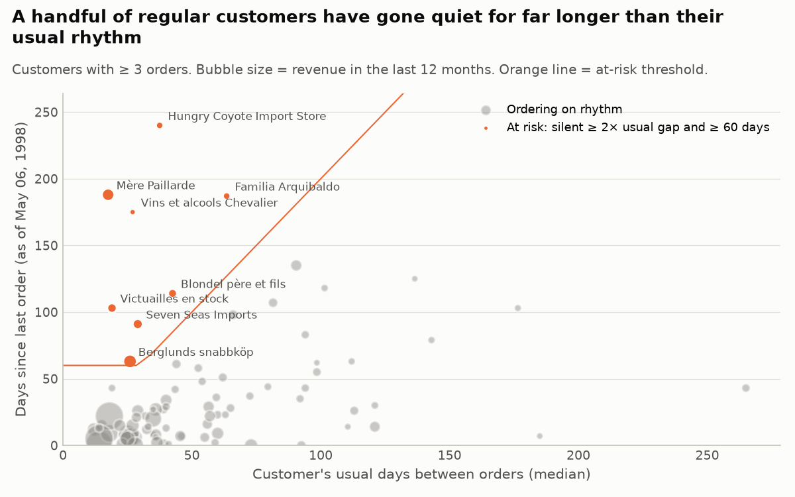
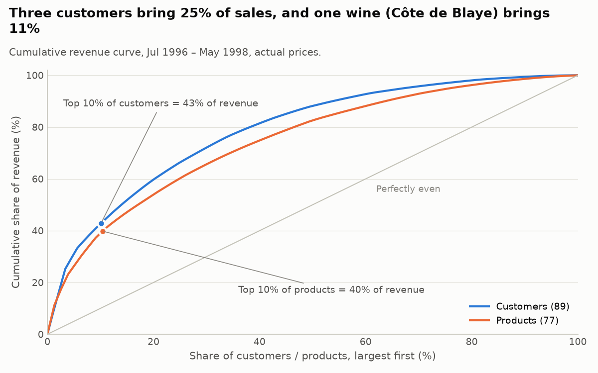

Summary for the manager
- Q1 Price increase: The 25% price increase in April 1997 did not reduce unit sales, and revenue rose. Unit growth did stall for about 8 months afterward.
- Q2 Growth drivers: Revenue in Jan–Apr 1998 nearly doubled. Almost all of that came from existing customers ordering more often, not from new customers.
- Q3 Rush orders: Orders with a 14-day deadline are shipped late 18% of the time, against 4% for normal orders. They get no priority.
- Q4 Discounts: Discounted lines are bigger, but a 25% discount buys no more volume than a 5% one.
- Q5 Country markets: Most countries are growing. Each declining country comes down to one or two customers.
- Q6 At-risk customers: 8 regular customers ($52k, or 6% of yearly revenue) have gone quiet. They are worth a call.
- Q7 Concentration: The top 3 customers bring 25% of revenue, and one wine brings 11%. The overall risk is moderate, but the top accounts need care.
QUESTION 1
Did the 25% across-the-board price increase in April 1997 reduce demand?
Why it matters
Raising prices is the fastest way to raise revenue, but only if customers keep buying. How Northwind's customers reacted last time is the best guide to the next price decision.
Approach
The data shows that every order line before 7 April 1997 was sold at 80% of today's list price, and every line from that date on at 100%. That is one 25% increase on one day. I compared units sold in equal windows of 60, 90 and 180 days before and after the change. I checked whether the same customers bought less, and compared actual monthly units with the trend of the 9 months before the change.

Finding. Demand did not drop. In the 180 days after the increase, units were up 2% (11,848 → 12,084) and revenue up 17%. The 54 customers who bought in both periods bought 4.6% more units (Wilcoxon p = 0.49, so there is no significant change). Discounts were not raised to make up for it (the average fell from 6.2% to 5.8%). However, unit growth paused. From April to November 1997, units were 24% below the earlier upward trend, and growth resumed in December.
Business implication. The price increase appears to have been absorbed and lifted revenue. Because growth paused afterward, the next price change should be tried on part of the product range first, so its effect can actually be measured.
Caution: there is no comparison group, and the trend rests on only 9 months, so the data cannot show whether the price increase caused the pause.
QUESTION 2
What drove revenue growth in early 1998: more customers, more frequent orders, or bigger orders?
Why it matters
Each source of growth calls for a different plan. More customers points to marketing, more frequent orders to account management, and bigger orders to pricing and bundles. It also shows whether the growth is likely to last.
Approach
I split revenue into three parts that multiply together: active customers × orders per customer × revenue per order. I compared the same calendar months one year apart, valuing all sales at current list prices so the April 1997 price increase does not inflate the growth. Then I traced the change to individual customers. Checks: two other time windows, removing the 3 biggest contributors, and removing the largest 1% of orders.

Finding. Jan–Apr 1998 revenue was 1.86× that of Jan–Apr 1997 at constant prices (2.21× at actual prices). Orders per customer rose from 1.89 to 3.20 (1.69×). Active customers rose from 65 to 80 (1.23×), and revenue per order fell to 0.89×. Order frequency explains about 85% of the growth. Of the 21 customers who ordered in early 1998 but not in early 1997, only one was truly new. The pattern holds without the top 3 customers (+67%) and without the largest orders (1.88×).
Business implication. Growth comes from existing accounts buying more often, which is good for loyalty. But Northwind has gained almost no new customers since mid-1997, and smaller, more frequent orders raise handling and shipping work. A deliberate plan to win new customers is the gap.
QUESTION 3
Are orders with a short 14-day deadline handled any faster?
Why it matters
Customers who ask for a short deadline are telling us that timing matters to them. Missing it puts some of the larger orders at risk.
Approach
Every order has a required date 14, 28 or 42 days after the order date. For shipped orders, I compared how often each group shipped after its required date and how long shipping took. To rule out other explanations, I repeated the comparison within each shipper, year and employee. I also ran a permutation test that keeps shipper and year fixed.

| Deadline | Orders | Shipped late | Late rate | Median days to ship |
|---|---|---|---|---|
| 14 days | 68 | 12 | 17.6% | 7.5 |
| 28 days | 682 | 25 | 3.7% | 7.0 |
| 42 days | 59 | 0 | 0.0% | 7.0 |
Finding. 14-day orders ship no faster than others (median 7.5 vs 7.0 days), so 17.6% of them miss their deadline, against 3.7% of 28-day orders (Fisher exact test p = 0.00004). The gap appears for every shipper and every year (permutation test p = 0.0002). 14-day orders are 8% of shipped orders but 32% of late ones, and they are larger than average ($1,969 vs $1,497).
Business implication. The warehouse appears to work in order of arrival and ignore deadlines. A simple rule, such as flagging 14-day orders for priority picking, could prevent most of these late shipments at little cost.
"Late" means shipped after the required date. Actual delivery dates are not in the data.
QUESTION 4
Do deeper discounts buy larger orders or more repeat business?
Why it matters
Discounts cost Northwind $89k in this period. If deeper discounts don't bring more business, part of that money is wasted.
Approach
Products differ in typical order size, so I compared each order line with the usual undiscounted quantity of the same product ("relative quantity"). I compared this across the standard rates of 0–25% with bootstrap intervals and rank-based tests, and checked each year separately. I also checked whether customers reorder sooner after a discounted order, including within the same customer.

Finding. Discounted lines are about 30% larger than undiscounted ones. But among discounted lines the rate makes no difference. A 25% line is the same size as a 5% line (Kruskal-Wallis p = 0.34), and this holds in every year. The 20% and 25% rates cost $55k of the $89k given away. Customers reorder within 90 days after 83% of discounted orders, against 64% after other orders. Frequent buyers get more discounts, though, and within the same customer the gap shrinks to 78% vs 66% (p = 0.049).
Business implication. Offering some discount goes along with larger orders and return visits, but deeper discounts show no extra benefit. A trial cap at 10% is worth running. If quantities stayed the same, it would have saved about $36k (a hypothesis, not tested).
All results are associations. Discounts were not assigned at random, so this data cannot prove what a discount causes.
QUESTION 5
Which country markets are growing or shrinking, and where should sales attention go?
Why it matters
Sales effort is limited. Knowing which markets are growing and why tells the manager where to invest and where to step in.
Approach
For each country (the ordering customer's country), I compared revenue in Jan–Apr 1998 with Jan–Apr 1997 at constant prices. I checked the result against two other time windows, flagged countries with fewer than 10 orders as small samples, and broke each declining country down by customer.

Finding. The largest gains are the USA (+$46.8k), Germany (+$44.1k) and Brazil (+$29.0k). The top 4 countries make up 71% of the total gain, and 15 of 21 countries grew in all three comparisons. Every decline traces to one or two customers. Denmark had one large order from Simons bistro in Jan 1997, Canada's Mère Paillarde stopped ordering after Oct 1997, and the declines in Finland and Mexico are each due to a single customer. In 6 countries, one customer makes up at least 70% of the country's revenue.
Business implication. With so few customers per country, country is too coarse a unit for decisions. Attention to individual accounts (see Q6) matters more than a market-level strategy.
QUESTION 6
Which valuable customers are going quiet and may be lost?
Why it matters
Keeping a customer costs far less than winning a new one, and Q2 showed that new customers have been rare. Spotting customers who are drifting away, while there is still time to act, protects the revenue base.
Approach
Each customer has their own ordering rhythm, so a fixed "90 days" rule would be unfair. I flagged customers with at least 3 orders who have been silent for at least twice their usual (median) gap between orders and at least 60 days. I tested how the list changes with other thresholds. I also backtested the rule at three earlier dates to see whether flagged customers really stopped ordering.

| Customer | Country | Usual gap (days) | Days silent | × usual | 12-month revenue |
|---|---|---|---|---|---|
| Berglunds snabbköp | Sweden | 26 | 63 | 2.4 | $16,204 |
| Mère Paillarde | Canada | 17.5 | 188 | 10.7 | $12,912 |
| Seven Seas Imports | UK | 29 | 91 | 3.1 | $7,170 |
| Victuailles en stock | France | 19 | 103 | 5.4 | $5,828 |
| Blondel père et fils | France | 42.5 | 114 | 2.7 | $4,715 |
| Familia Arquibaldo | Brazil | 63.5 | 187 | 2.9 | $2,377 |
| Hungry Coyote Import Store | USA | 37.5 | 240 | 6.4 | $2,181 |
| Vins et alcools Chevalier | France | 27 | 175 | 6.5 | $380 |
Finding. As of 6 May 1998, 8 customers meet the rule. Together they account for $51.8k, or 6.0% of the last 12 months' revenue. The list hardly changes with other thresholds (7–8 customers). In the backtest, flagged customers still reordered within 120 days 58–87% of the time, against 80–93% for other customers. Silence is a warning sign, not proof of loss.
Business implication. Use the list for a low-cost check-in call, starting with the largest accounts. Mère Paillarde, silent for more than 10 times its usual gap, is the clearest case.
QUESTION 7
How dependent is revenue on a few customers and a single product?
Why it matters
If a few accounts or one product carry the business, losing one of them is a serious risk. Knowing the size of that risk guides how much to spend on keeping key accounts and backup suppliers.
Approach
I measured the share of revenue held by the top customers and products, and the Herfindahl-Hirschman Index (HHI), a standard concentration measure. I tracked both by half-year and estimated how much revenue would be lost with the top accounts in the last 12 months.

Finding. The top 3 customers (QUICK-Stop, Ernst Handel, Save-a-lot Markets) bring 25% of revenue, and the top 10% of customers bring 43%. Overall concentration is low (customer HHI 337, well under the common 1,500 threshold) and is not rising. The top-3 share by half-year was 18%, 24%, 30% and 25%. One wine, Côte de Blaye, is 11.2% of all revenue from only 24 order lines. Losing the top customer would remove 9.6% of the last 12 months' revenue, and losing the top 3 would remove 27.3%.
Business implication. The risk is moderate overall but real at the top. Dedicated care for the top 3 accounts, and a backup for Côte de Blaye's single supplier, are prudent steps.
Data, methods, and limitations
Data handling
- Revenue = unit price × quantity × (1 − discount), from the order lines. Where the April 1997 price increase would distort a comparison, sales are valued at current list prices ("constant prices").
- The data runs from 4 July 1996 to 6 May 1998. Comparisons use the same calendar months in each year, and the partial May 1998 is left out of monthly trends.
- Extra columns in the Product sheet that are not part of the original database were ignored. Country means the customer's country, not the ship-to address.
Verification
Eight key numbers were recomputed by hand in Excel, including total revenue, the Q1 unit counts, the Q3 late orders and the Q7 top-customer revenue. All matched.
Limitations
- Northwind is a fictional teaching dataset. Patterns such as the single-day 25% price step and the round discount rates may come from how the data was generated.
- The data covers only 22 months.
- All findings are associations, not proven causes.
Reproduce
All numbers, charts and tables come from python run_all.py in the
GitHub repository.
See its README for step-by-step instructions.